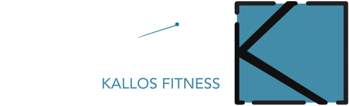
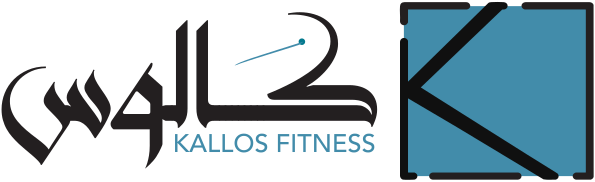
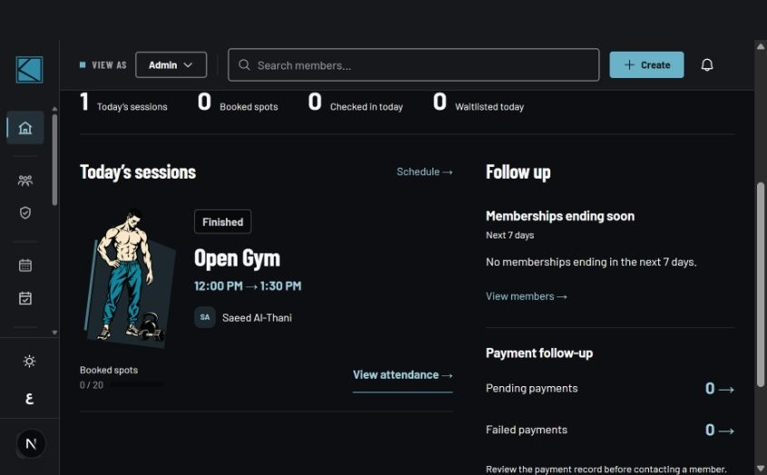
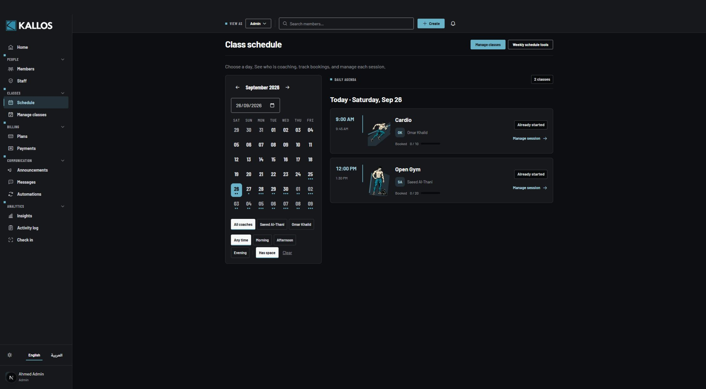
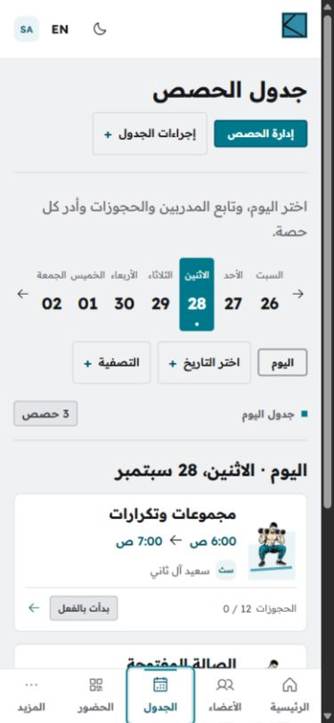
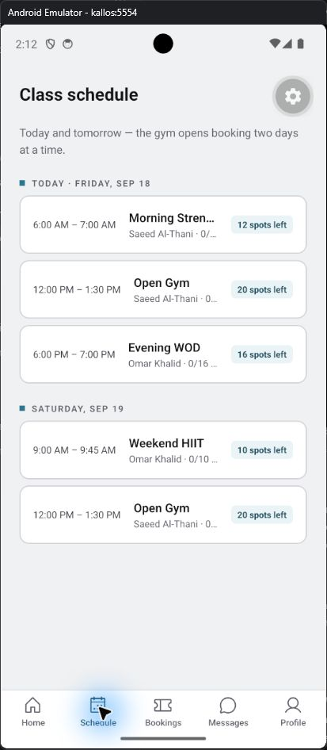

Bookings that respect the rules
Class schedules support capacity, coach assignment, repeating sessions, bookings, and waitlists. Eligibility and capacity changes are handled through database functions, rather than relying on interface checks.


Web platform / Mobile application
A website gets people through the door. Kallos also needs to keep classes, memberships, attendance, and the team moving together.

Inside the product
Actual application screens: the booking calendar, the staff workspace, the Arabic website, and the Android app.

The working web interface brings the calendar, coach filters, class times, and available places into one schedule. Staff can move from a session to its management tools.
Today’s sessions, booked places, attendance, and follow-up work appear together. This capture shows the actual staff interface with sample records.

The staging capture shows the real Arabic schedule, mirrored navigation, localized dates and times, and a right-to-left class agenda on a narrow screen.

An Android emulator capture from the React Native application. Members can browse upcoming sessions and see the available places. Emulator and development controls remain visible in the original capture.
The still-image gallery above was captured from development and staging builds in September 2026 using sample data. Individual details may differ from the current live release. Open any image to inspect it at full size.
The interface changes with the job. A member needs a place in a class; staff need the tools to run it.
Book a class and keep track of your training.
Technique and strength / 60 minutes
The real platform checks membership eligibility and class capacity before confirming a booking.
Members browse the schedule, book eligible classes, and review their bookings and membership.
Illustrative product walkthrough using sample content. Actions stay on this page and do not create real bookings or access member records.
A shared foundation
The Next.js website and Expo / React Native app share a Supabase backend, typed APIs, business rules, and translation resources. The member experience stays connected across both interfaces.
Arabic is built into the layouts, dates, and interaction patterns. It is supported alongside English, including right-to-left presentation.
The website is deployed on Cloud Run. The mobile codebase includes EAS configuration for Android production builds.
What I built
Class schedules support capacity, coach assignment, repeating sessions, bookings, and waitlists. Eligibility and capacity changes are handled through database functions, rather than relying on interface checks.
Members, coaches, receptionists, and administrators use the same platform with different permissions. Supabase Auth and Postgres row-level security enforce those boundaries behind the screens.
Membership records, attendance, announcements, messages, reports, and audit logs connect the customer-facing experience to the gym’s internal workflows.
A TypeScript monorepo shares API code and business rules across web and mobile. Docker packages the web application for Google Cloud Run, while CI definitions cover type checks, tests, builds, and security checks.
Product development
Kallos connects a public identity to the software needed to operate a gym: a bilingual member experience, staff workflows, and shared web and mobile services.